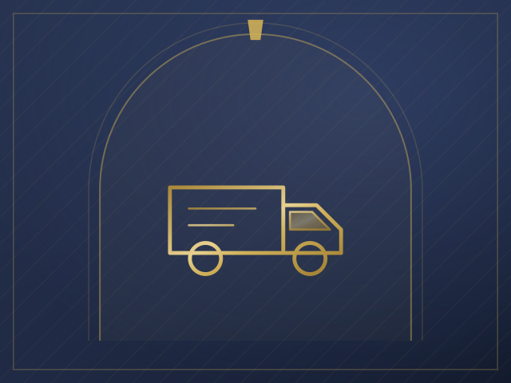
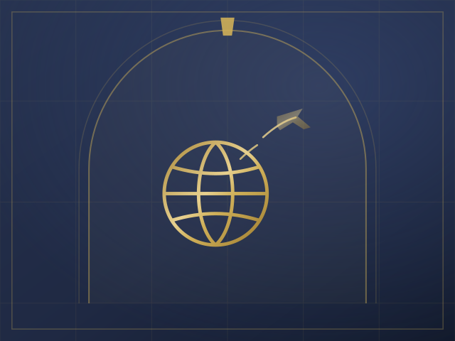

Coming home from hospital
The home prepared, transport and supplies arranged, and services coordinated around the discharge.
Service area 02
The coordinating link between the client, their family and the professionals around them, so nothing falls between organisations.

What this covers
Each one can be arranged on its own or as part of ongoing support.
Ongoing coordination of a client’s practical affairs, with one person holding the whole picture.
Keeping appointments, services and information joined up between health teams, care providers and family.
A practical partner for the care company: we pick up what sits outside the care plan and keep communication flowing.
We attend hospital, medical, solicitor and other professional appointments with or on behalf of the client, as agreed.
Hospital discharge
Typical situations

The home prepared, transport and supplies arranged, and services coordinated around the discharge.

One person who keeps the GP, the carers, the family and the client working from the same page.
Questions
We work alongside whichever health and care professionals are involved in a client’s discharge, coordinating the practical side that sits outside clinical care.
Yes. Attendance at solicitor and other professional appointments is part of this service area.
Next step
Tell us what is needed. We will confirm what we can take on and what it involves before anything starts.